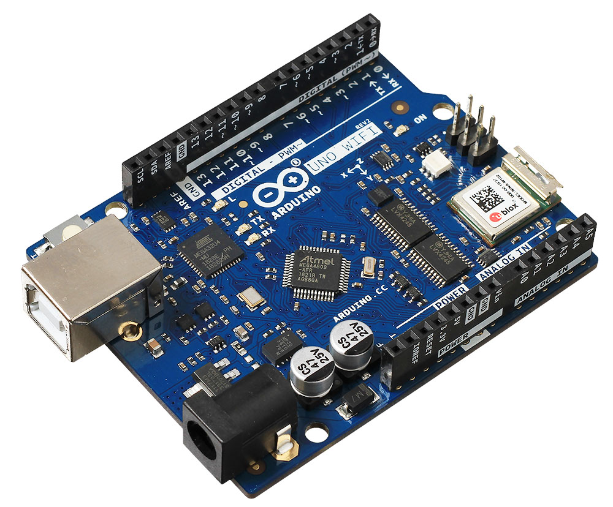
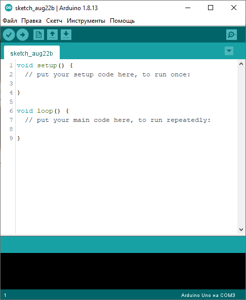
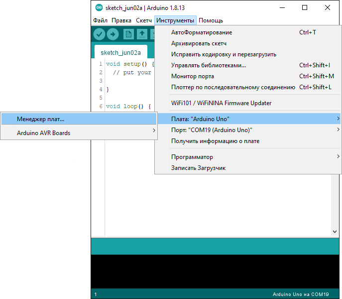
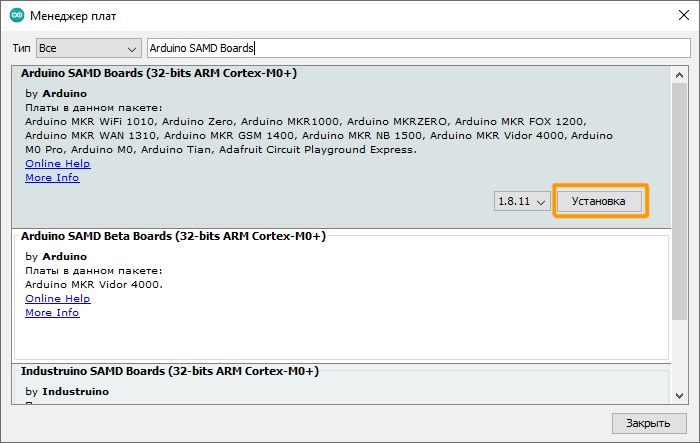
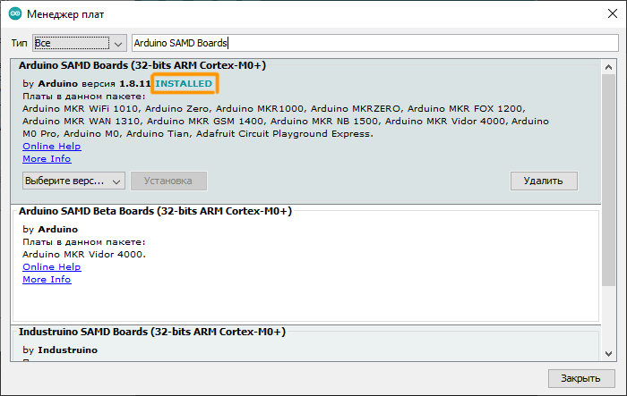
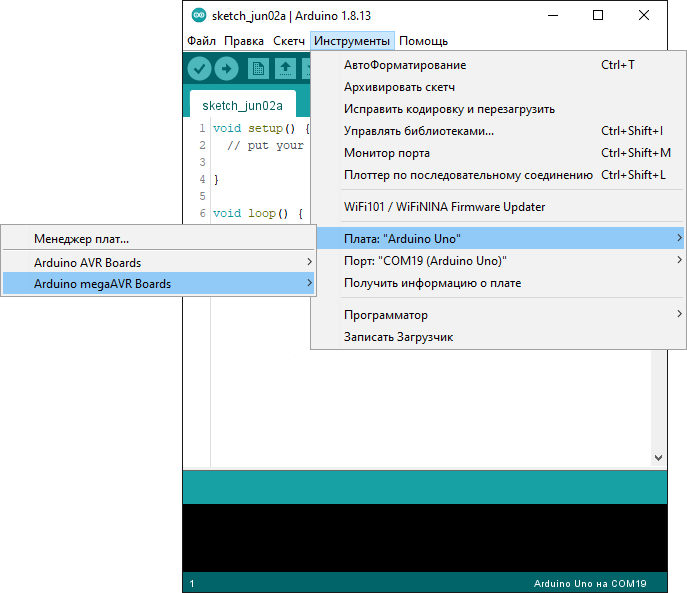

Менеджер плат Arduino IDE
Платформы Arduino megaAVR Boards
Рассмотрим установку дополнений на платформе Arduino megaAVR Boards.
Настройка
1. Откройте среду программирования Arduino IDE.
2. Зайдите в менеджер плат: Инструменты - Плата - Менеджер плат.
3. Вбейте в фильтр строку Arduino megaAVR Boards. Найдите в списке соответствующую платформу и нажмите на кнопку Установить.
4. Начнётся установка дополнений. Надпись INSTALLED сообщает, что дополнения успешно установлены.
5. Теперь вам доступны к программированию платформы Arduino megaAVR Boards.
